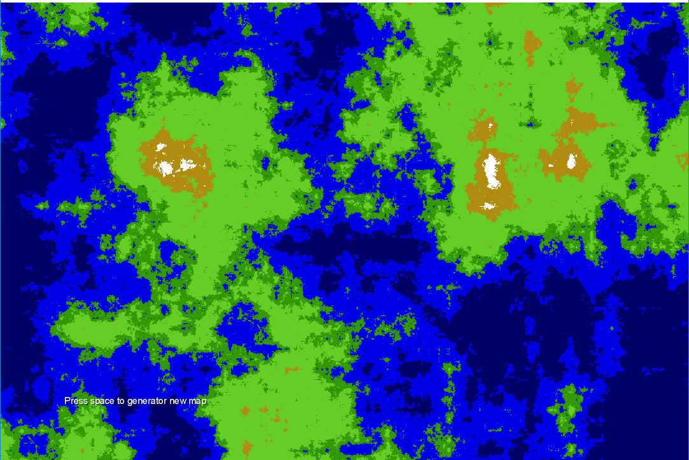
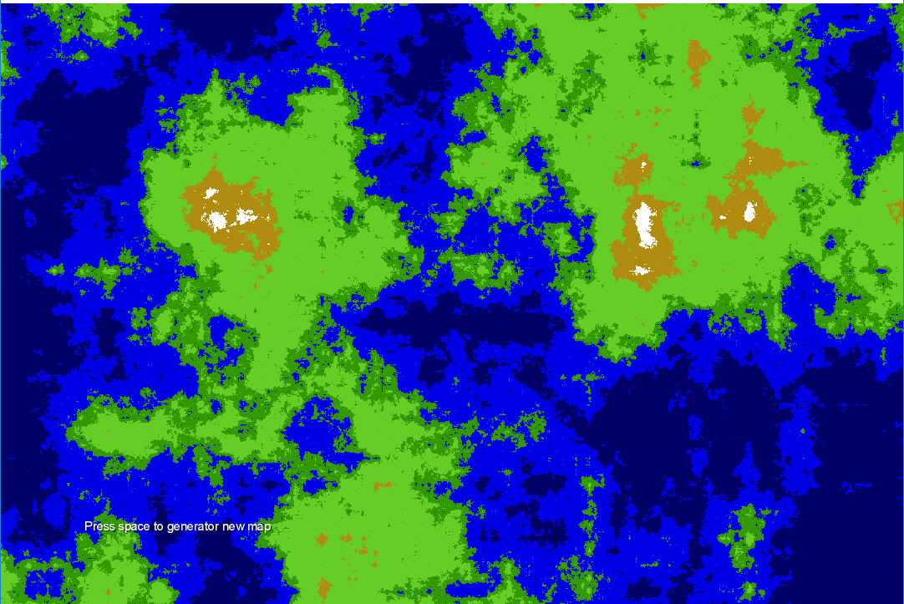

This is paragraph number 1
This is paragraph number 2
These are images with size of 50x50, round corner, and some outline


Text center
Below should contains everything from level 1 to 3
Level 1: Newbie. Show us a page that has:
Level 2: Apprentice. Show us a page that has:
Level 3: Master. Show us a page that has:
This is paragraph number 1
This is paragraph number 2
These are images with size of 50x50, round corner, and some outline

Text center